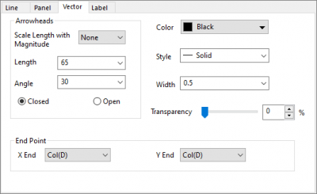
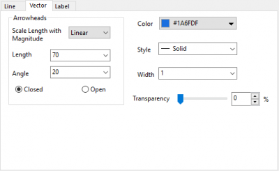
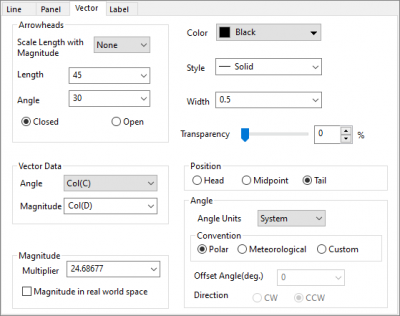
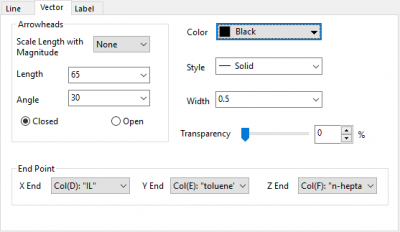
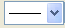

Die 2D-Vektoren in rechteckigen, polaren und ternären Koordinaten werden auf der Registerkarte Vektor im Dialog Details Zeichnung benutzerdefiniert angepasst. Um die Vektoren im 3D-Vektordiagramm benutzerdefiniert anzupassen, können Sie zur Registerkarte 3D-Vektor gehen.
|

Die Registerkarte Vektor für XYXY-Diagramme in rechteckigen und polaren Koordinaten |

Die Registerkarte Vektor für Kompassdiagramme |
|

Die Registerkarte Vektor für XYWG-Diagramme in rechteckigen Koordinaten |

Die Registerkarte Vektor für XYZXYZ-Diagramme in ternären Koordinaten |
| Länge mit Betrag skalieren |
Skaliert die Pfeilspitzen entsprechend der Betragsänderungen der Vektoren. Verfügbare Optionen sind:
|
|---|---|
| Länge |
Festlegen der Länge von Pfeilspitzen Die Länge wird in Punkten angegeben. |
| Winkel |
Festlegen der Winkel der Pfeilspitzen in Grad |
| Geschlossen/Offen |
Wählen Sie die Option Geschlossen, um ausgefüllte Pfeilspitzen anzuzeigen. Wählen Sie die Option Offen, um nicht ausgefüllte Pfeilspitzen (transparent) anzuzeigen. |
Wählen Sie aus der Schaltfläche Farbe eine Vektorfarbe aus.
Ändern Sie den Linienstil für den Vektor. Sie können auch die Änderungen mit dem Hilfsmittel Linie/Rahmen  auf der Symbolleiste Stil vornehmen.
Geben Sie in das Kombifeld Breite die gewünschte Breite der Vektorlinie ein oder wählen Sie diese hier aus. Die Linienbreite wird in Punkten gemessen, wobei 1 Punkt=1/72 Zoll entsprechen.
Für alle 2D-Vektordiagramme mit dieser Registerkarte Linie können Sie in der Auswahlliste Breite eine Spalte auswählen, um die Linienbreite auf diese Spalte abzubilden. Bitte beachten Sie, dass nur Spalten in dem aktuellen Arbeitsblatt in der Auswahlliste aufgeführt werden.
Wenn eine Spalte ausgewählt ist, können Sie einen Skalierungsfaktor festlegen, um die Breitenspalte mit einem Wert zu multiplizieren und die Linienbreite des Vektors zu definieren. Sie können sich auf den Skalierungsfaktor für die Symbolgröße beziehen.
Bewegen Sie den Schieber oder geben Sie eine Zahl in das Kombinationsfeld ein, um Transparenz auf die Vektoren anzuwenden. Die Skala reicht von 0 (nicht transparent) bis 100 (vollständig transparent).
Für Spezialpunkte wird das Kontrollkästchen Auto verwendet, damit der Transparenzeinstellung von anderen Vektoren gefolgt wird. Deaktivieren Sie das Kontrollkästchen, um die Transparenz des Spezialpunkts anzupassen.
Wählen Sie die Spalte aus, die die X-Werte für die Endpunkte in dem Auswahlmenü X-Ende für XYXY-Vektor- und ternäre Vektordiagramme enthält.
Wählen Sie die Spalte aus, die die Y-Werte für die Endpunkte in dem Auswahlmenü Y-Ende für XYXY-Vektor- und ternäre Vektordiagramme enthält.
Wählen Sie die Spalte aus, die die Z-Werte für die Endpunkte in dem Auswahlmenü Z-Ende für ternäre Vektordiagramme enthält.
Hinweis:
|
Diese Bedienelemente lassen sich nur auf XYWG-Diagramme anwenden.
| Winkel |
Wählen Sie aus dem Auswahlfeld Winkel die Spalte aus, die den Winkelwert des Vektors enthält. Alternativ entnehmen Sie diesem Auswahlfeld einen Wert. Der Winkel wird von einer Parallelen zur X-Achse aus gegen den Uhrzeigersinn gemessen und halbiert den Vektor. Die Einheiten werden durch die Auswahlliste Winkeleinheit eingestellt. |
|---|---|
| Betrag |
Wählen Sie die Spalte, die die Werte für die Vektorgrößen enthält, über das Auswahlfeld Betrag aus. Alternativ entnehmen Sie diesem Auswahlfeld einen Wert. Die Länge wird in Punkten angegeben. |
Diese Bedienelemente lassen sich nur auf XYWG-Diagramme anwenden.
| Multiplikator Betrag |
Wählen Sie einen Wert aus dem Auswahlfeld Multiplikator Betrag aus oder geben Sie ihn dort ein, um die Länge der Vektoren proportional zu vergrößern oder zu verkleinern. Tragen Sie beispielsweise 0.5 ein, um die Vektoren mit der Hälfte ihrer ursprünglichen Länge zu zeichnen. Der Standardwert ist 1, so dass das Auswahlfeld Betrag die Vektorlängen bestimmt. |
|---|---|
| Betrag im realen Raum |
Wenn dieses Kontrollkästchen aktiviert ist, wird der Betrag in Koordinaten des realen Raums interpretiert und verwendet, um die festgelegten X, Y-Werte der Endpunkte des Vektors zu berechnen. Der Betrag, der in dem Diagramm angezeigt wird, ändert sich, wenn die X- oder Y-Achsenskalierungen geändert werden. Sie bleiben jedoch konstant in den Koordinaten des realen Raums. Wenn dieses Kontrollkästchen nicht aktiviert ist, wird der Betrag relativ zum Diagrammlayer interpretiert. |
Wählen Sie die gewünschte Option, um die XY-Koordinatenwerte für den Anfang, den Mittelpunkt oder das Ende des Vektors zu übernehmen.
Diese Bedienelemente lassen sich nur auf XYWG-Diagramme anwenden.
| Winkeleinheiten |
Wählen Sie die Einheit für diese Winkel.
|
|---|---|
| Konvention |
|
| Versatzwinkel (Grad) |
Geben Sie die Gradangabe des Versatzwinkels für die Vektoren ein bzw. wählen Sie sie ein.
Wenn der Wert des Vektorwinkels und des Versatzwinkels 0 ist, dann liegt die Vektorrichtung bei 3 Uhr. |
| Richtung |
Legen Sie die Richtung für den Versatzwinkel fest.
|